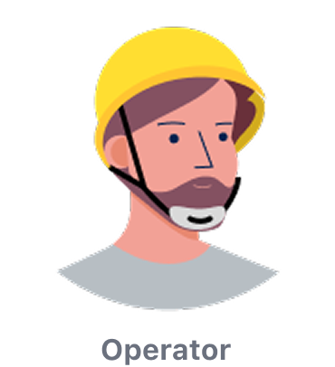
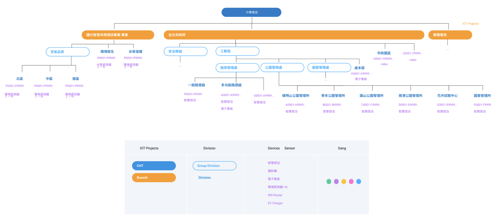
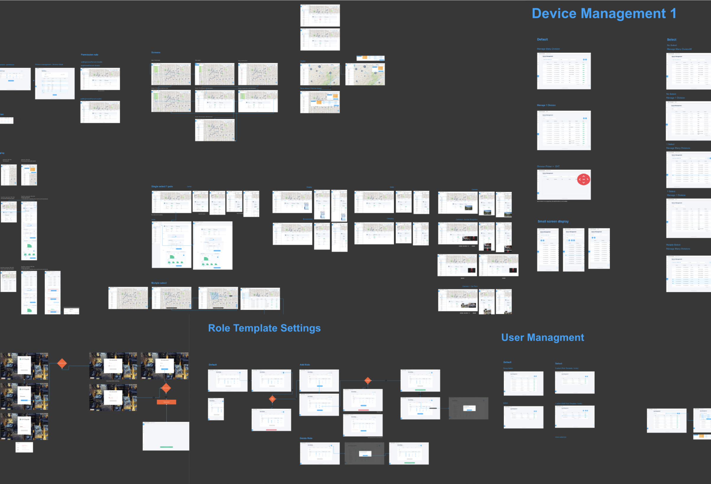
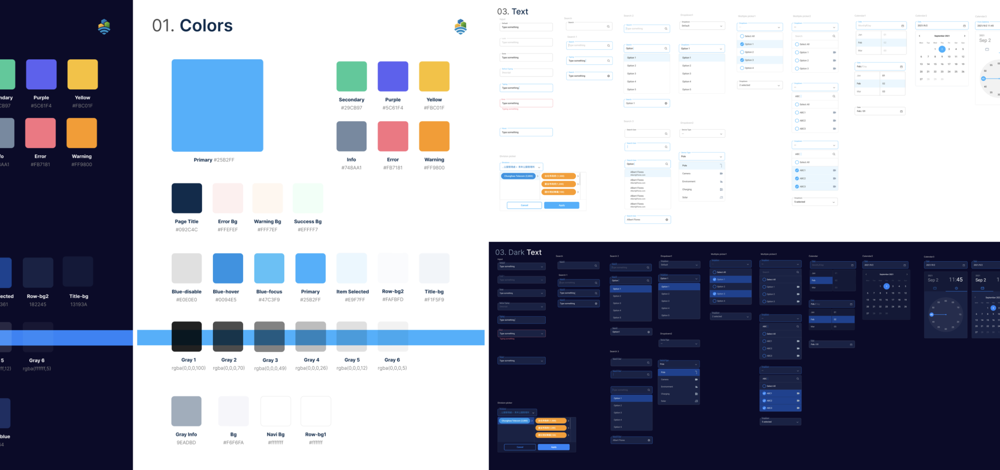
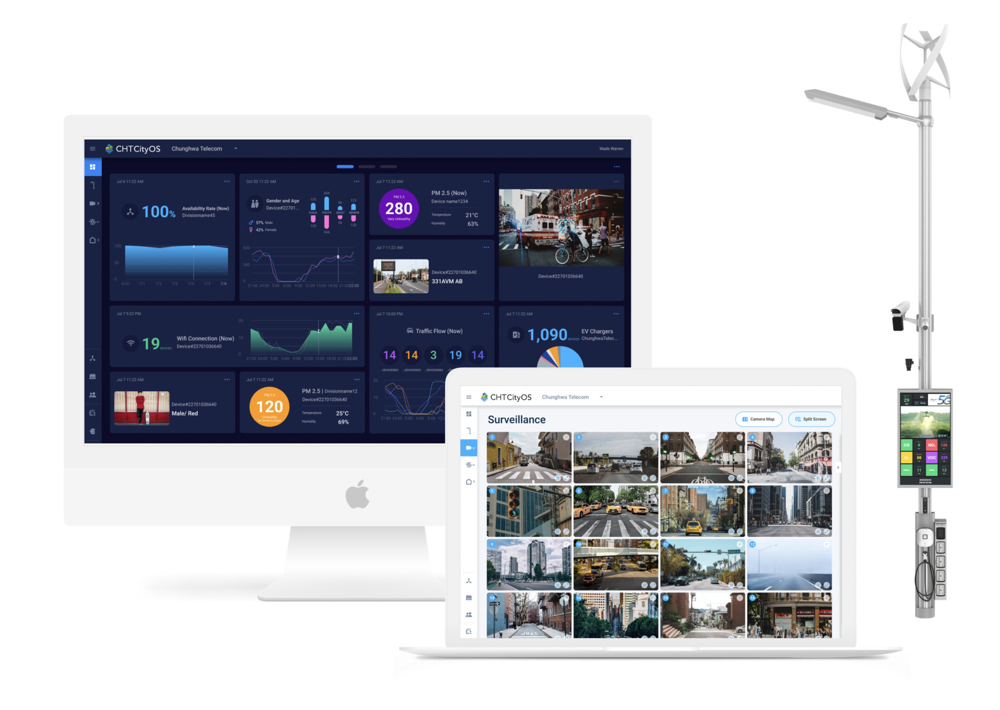
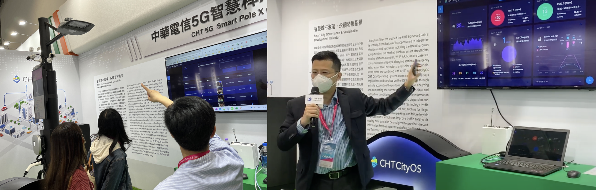

Case Study · SaaS Console
Web Console for Smart City
A management system for city IoT devices — designing a great assistant for the people who run smart cities, from big-data dashboards down to a single street light.

Design a great assistant for managing smart cities
More and more IoT devices are being built everywhere in our environment, and city management owners are asking for good tools to run them. The challenge: how to manage all of these devices' data in one place, in a way that is easy to use. My role spanned the whole arc — starting with research, studying the original system, forming the concept, building the information architecture, and designing the UI flow and graphics.
Mission
Design an IoT city-management platform that accommodates multiple levels of users with different tasks.
Challenge
Designing a platform that accommodates multiple levels of users, devices, and usage scenarios at once.
Clarify what information is most important for the city
The original web console targeted "all kinds of users" — which is the same as having no target audience at all. Our first move was to find the true user of this console. Through interviews with project managers at CHT, we identified two real audiences: the decision maker of city management, and the operator.
The decision maker
Responsible for city-level governance — needs big-data management and asset oversight across every unit to make decisions for the city.

The operator
Runs the day-to-day usage scenarios — managing devices in the field and the operational requirements of each managed unit.
A complex multi-level, multi-user platform
The system must meet the needs of asset and operational management for administrators. As a city-level smart pole management system, beyond big-data management there is also the asset management of various units and the usage scenarios run by operators. The system must accommodate a hierarchical structure, flexible user permissions, and a variety of different usage scenarios.
Hierarchy definition
To manage this multi-device, multi-role, multi-level platform, I first defined the system architecture around two ideas: grouping of management units and grouping of managed devices. With this architecture as the basis, it became quite clear how to define the management of personnel and assets.

Smart pole operation scenarios
We interviewed managers who had built urban street-lighting systems and found specific needs for street-light management: real-time notification of street-light failures, managing large areas of street lights at once, and understanding — in real time — the equipment attached to each light. We designed corresponding solutions for each of these scenarios.
Wireframe & UI flow
We discussed with the managers using wireframes and went through multiple iterations to arrive at the interface we believe is most suitable for smart street-light managers.

One system, two modes, every screen
The website is used on both computers and tablets. Because users work in very different environments, the system is designed with both light and dark modes. Our team also designed the CHT CityOS corporate identity as the basis for developing the web design.

A platform built from the perspective of urban governance
This is a large-scale system based on the perspective of urban governance. We designed a platform that meets the needs of city managers.

Go to market
The CHT CityOS platform has been successfully exhibited across various smart cities and has been approached by multiple cities for use. Its architectural design has also influenced website-platform design within Chunghwa Telecom — and more platforms will be developed on this foundation.
